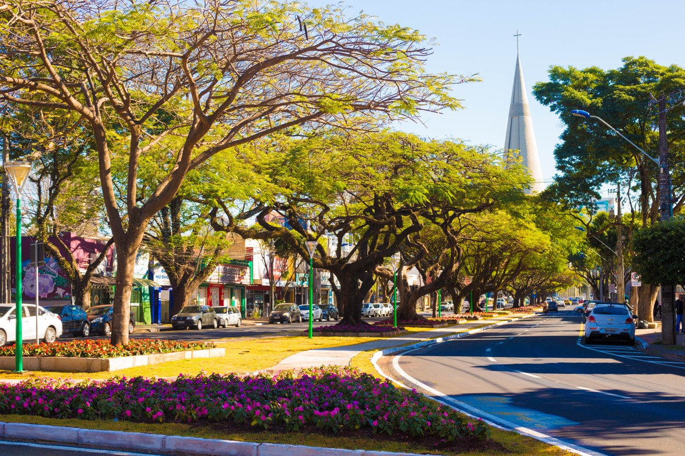

Com traçado urbanístico inicialmente planejado e modernista, pelo urbanista Jorge Macedo Vieira, seguindo o princípio de Ebenezer Howard de cidade-jardim, sofreu crescimento acelerado nas décadas seguintes. Ainda assim, o município mantém índices de qualidade de vida elevados, preservando no perímetro urbano grandes áreas de mata nativa como o Horto Florestal, o Parque dos Pioneiros (bosque II) e o Parque do Ingá, sendo este último aberto ao público. Inclui ainda fragmentos menores como o Parque do Cinquentenário, ou áreas particulares e uma grande rede de áreas de conservação de fundos de vale.
Excelente cidade para se viver, reconhecida como uma das cidades mais arborizadas do país, também é uma cidade muito funcional, isso graças ao planejamento desde sua fundação, além disso a cidade é relativamente nova se comparada a outros municípios do estado (74 anos).

Curiosidades da cidade
Muuuuitas árvores, no dia que chove, é galho para todo lado.